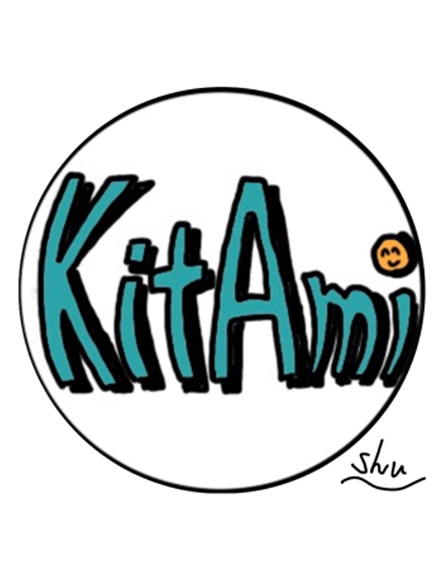

↑ Return to the top page.
2020年前期テーマ
商品企画やデザイン（パッケージ等）に興味があるので、それを中心に学んでいきたい。そのために色々なものを製作して行く過程の中で3Dプリンターやイラストレーター、レーザーカッターの操作法を覚えていきたいと考えている。
特定の誰かに教わるのではなく、自分で挑戦し、試行錯誤して泥臭く理解していきたい所存である。前期はそんな感じで進めて行くと同時に、作ったものをコンテストに応募し学外にアウトプットしていきたい。
具体的には、バンフー学生トートバックデザインコンテストやバンフー学生Tシャツデザインコンテスト、TOKYO MIDTOWN AWARDに応募をしようと思っている。
課題の有無について
アイデアが枯渇した際に、テーマを設定していただきたいです...。それ以外では特に課題の設定はいらないと考えております。今の所は。